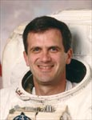

Lyndon B. Johnson Space Center
Houston, Texas 77058
|
National Aeronautics and Space Administration Lyndon B. Johnson Space Center Houston, Texas 77058 |
 |
Biographical Data |
||
Peter J.K. "Jeff" Wisoff (Ph.D)
NASA Astronaut (former)
PERSONAL DATA: Born August 16, 1958, in Norfolk, Virginia. Married to Tamara E. Jernigan. He enjoys scuba diving, racquetball, swimming, and sailing. His parents, Carl & Pat Wisoff, reside in Norfolk.
EDUCATION: Graduated from Norfolk Academy, Norfolk, Virginia, in 1976; received a bachelor of science degree in physics (with Highest Distinction) from University of Virginia in 1980, a master of science degree and a doctorate in applied physics from Stanford University in 1982 and 1986 respectively.
SPECIAL HONORS: NASA Space Flight Medals (1993, 1994, 1997); NCR Faculty Award of Excellence (1989); National Science Foundation Graduate Fellowship 1980-1983; Physics Prize and Shannon Award from the University of Virginia (1980). Selected to Phi Beta Kappa in 1979.
EXPERIENCE: After graduating from the University of Virginia in 1976, Dr. Wisoff began his graduate work on the development of short wavelength lasers at Stanford University as a National Science Foundation Graduate Fellow. Upon completing his master’s and doctorate degrees at Stanford in 1986, Dr. Wisoff joined the faculty of the Electrical and Computer Engineering Department at Rice University. His research focused on the development of new vacuum ultraviolet and high intensity laser sources. In addition, he also collaborated with researchers from regional Texas Medical Centers on the applications of lasers to the reconstruction of damaged nerves. He has recently collaborated with researchers at Rice University on new techniques for growing and evaluating semiconductor materials using lasers. Dr. Wisoff has contributed numerous papers at technical conferences and in journals in the areas of lasers and laser applications.
NASA EXPERIENCE: Selected by NASA in January 1990, Dr. Wisoff became an astronaut in July 1991. He is qualified for flight assignment as a mission specialist. His technical assignments to date include: spacecraft communicator (CAPCOM) in Mission Control; flight software verification in the Shuttle Avionics Integration Laboratory (SAIL); coordinating flight crew equipment; evaluating extravehicular activity (EVA) equipment and techniques for the construction of Space Station; lead for the Payloads and Habitability Branch of the Astronaut Office. A veteran of four space flights, STS-57 in 1993, STS-68 in 1994, STS-81 in 1997 and STS-92 in 2000, Dr. Wisoff has logged a total of 42 days, 56 hours, 1 minute and 48 seconds in space, including , 19 hours and 53 minutes of EVA time in three space walks.
Dr. Wisoff retired from NASA in September 2001 to join the Lawrence Livermore National Laboratory where he serves as Deputy Program Manager for Systems Engineering at the National Ignition Facility.
SPACE FLIGHT EXPERIENCE: STS-57 Endeavour (June 21 to July 1, 1993) launched from and returned to land at the Kennedy Space Center, Florida. The primary objective of this flight was the retrieval of the European Retrievable Carrier satellite (EURECA) using the RMS. Additionally, this mission featured the first flight of Spacehab, a commercially-provided middeck augmentation module for the conduct of microgravity experiments. Spacehab carried 22 individual flight experiments in materials and life sciences research. During the mission Wisoff conducted a 5-hour, 50-minute spacewalk during which the EURECA communications antennas were manually positioned for latching, and various extravehicular activity tools and techniques were evaluated for use on future missions. STS-57 was accomplished in 155 orbits of the Earth in 239 hours and 45 minutes.
STS-68 Endeavour (September 30 to October 11, 1994) was the Space Radar Lab-2 (SRL-2) mission. As part of NASA’s Mission to Planet Earth, SRL-2 was the second flight of three advanced radars called SIR-C/X-SAR (Spaceborne Imaging Radar-C/X-Band Synthetic Aperture Radar), and a carbon-monoxide pollution sensor, MAPS (Measurement of Air Pollution from Satellites). SIR-C/X-SAR and MAPS operated together in Endeavour’s cargo bay to study Earth’s surface and atmosphere, creating radar images of Earth’s surface environment and mapping global production and transport of carbon monoxide pollution. Real-time crew observations of environmental conditions, along with over 14,000 photographs aided the science team in interpreting the SRL data.
The SRL-2 mission was a highly successful test of technology intended for long-term environmental and geological monitoring of planet Earth. Following 183 orbits of the Earth in 269 hours and 46 minutes, the eleven-day mission ended with Space Shuttle Endeavour landing at Edwards Air Force Base, California.
STS-81 Atlantis (January 12-22, 1997) was a ten-day mission, the fifth to dock with Russia’s Space Station Mir, and the second to exchange U.S. astronauts. The mission also carried the Spacehab double module providing additional middeck locker space for secondary experiments. In five days of docked operations more than three tons of food, water, experiment equipment and samples were moved back and forth between the two spacecraft. Following 160 orbits of the Earth in 244 hours, 55 minutes, the STS-81 mission concluded with a landing on Kennedy Space Center’s Runway 33 ending a 3.9 million mile journey.
STS-92 Discovery (October 11-24, 2000) was launched from the Kennedy Space Center, Florida and returned to land at Edwards Air Force Base, California. During the 13-day flight, the seven member crew attached the Z1 Truss and Pressurized Mating Adapter 3 to the International Space Station using Discovery’s robotic arm and performed four space walks to configure these elements. This expansion of the ISS opened the door for future assembly missions and prepared the station for its first resident crew. Dr. Wisoff totaled 13 hours and 16 minutes of EVA time in two space walks. The STS-92 mission was accomplished in 202 orbits, traveling 5.3 million miles in 12 days, 21 hours, 40 minutes and 25 seconds.
NOVEMBER 2001
This is the only version available from NASA. Updates must be sought direct from the above named individual.